번역할 프로젝트의 .exe 경로가 필요합니다.
예시 문서에서는 D:/Games/MyRenPyGame/Game.exe 형태로 설명합니다.
Ren'Py Translation Workbench 첫 작업 튜토리얼
이 문서는 처음 보는 사람을 기준으로, 실행 파일 하나를 선택해 프로젝트를 분석하고, 캐릭터 말투와 용어집을 손본 뒤, 최종 번역 시작 전에 무엇을 확인해야 하는지 순서대로 설명하는 HTML 가이드입니다.
여기서는 실제 번역 API 호출을 강제로 진행하지 않습니다.
대신 D:/Games/MyRenPyGame/Game.exe 같은 예시 경로를 기준으로,
화면에서 어떤 버튼을 누르고 무엇을 확인해야 하는지에 집중합니다.
- 시작 전에 준비할 것
- 첫 화면에서 보이는 핵심 UI
- Gemini / Vertex AI / OpenAI 선택 기준
- Vertex AI 자격 증명 얻는 방법과 공식 문서
- 실행 파일 분석과 개요 확인
- 대사/파일, 용어집/세계관, 캐릭터 탭 활용
- 배포/폰트와 Windows 글꼴 브라우저 사용
- 성인 큐와 편집/검수 탭 활용
- 번역 시작 & 로그 탭에서 최종 확인
1. 시작 전에 준비할 것
Gemini API key, Vertex AI 서비스 계정 JSON, 또는 OpenAI/Codex CLI 중 하나를 선택합니다.
전체 통번역 전에 분석, 용어집 정리, 캐릭터 말투 샘플 확인을 먼저 끝내는 것이 가장 안전합니다.
중요: 이 툴은 표준 구조에 가까운 Ren'Py 프로젝트에 가장 잘 맞습니다.
매우 동적인 문자열 조립, 이미지 내부 텍스트, 비표준 언어 전환 구조는 추가 보정이 필요할 수 있습니다.
2. 첫 화면에서 보이는 핵심 UI
1
Start.bat 실행 후 가장 먼저 보는 곳
첫 화면은 크게 두 묶음입니다. 위쪽은 API와 작업 방식 설정, 아래쪽은 게임 경로 입력과 분석 시작입니다.
- 공급자 / 인증 방식: Gemini API key, Vertex AI, OpenAI OAuth를 고릅니다.
- 빠른 번역 모드: 추천 품질, 저비용, 문체 실험 같은 기본 프리셋을 한 번에 적용합니다.
- 게임 / 추출 입력: 실행 파일 경로를 넣고
게임 분석을 실행합니다.
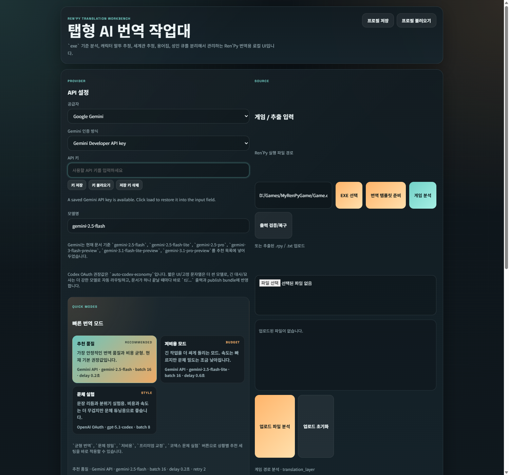
3. 공급자 선택 기준
가장 단순한 시작 방식입니다. API key만 넣으면 샘플 번역과 본번역을 바로 돌릴 수 있습니다.
Google Cloud 프로젝트 기준으로 청구되며, 무료 체험 크레딧이나 예산 제어를 함께 보려면 이 경로가 유리합니다.
로컬 Codex CLI 세션을 활용하는 경로입니다. 별도 API key 대신 OAuth 로그인 세션을 쓸 수 있습니다.
처음 시작 추천: 가장 먼저 결과를 보고 싶다면 Gemini,
Google Cloud 비용 추적이 중요하면 Vertex AI, 문체 실험이 중요하면 OpenAI/Codex 쪽이 보통 편합니다.
4. Vertex AI 자격 증명 얻는 방법
2
Workbench 안에서는 이렇게 보입니다
Gemini 인증 방식을 Vertex AI로 바꾸면, API key 대신
GCP 프로젝트 ID, 리전, 서비스 계정 JSON을 받는 전용 패널이 열립니다.
- GCP 프로젝트 ID: Google Cloud 콘솔에서 사용하는 정확한
project_id - 리전: 보통
global또는us-central1 - 인증 정보: JSON 경로 입력, JSON 파일 불러오기, JSON 붙여넣기 중 하나
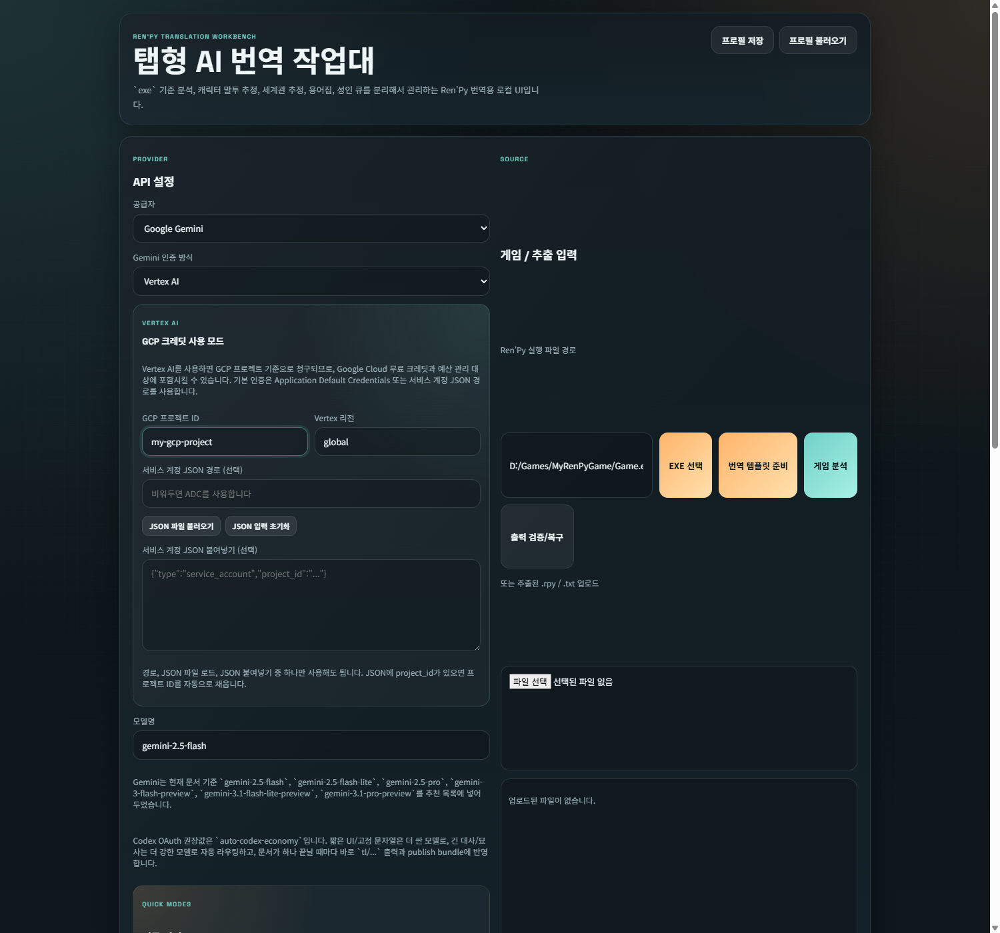
보안 원칙: 서비스 계정 JSON은 릴리즈 ZIP에 포함하지 말고,
자신의 PC에서 UI를 통해 런타임에만 불러오세요. 프로필 저장 JSON에도 원문 JSON이 들어가지 않도록 설계되어 있습니다.
Google Cloud에서 실제로 준비해야 하는 것
- Google Cloud 프로젝트를 만들거나 기존 프로젝트를 선택합니다.
- 프로젝트에 Billing을 연결합니다.
Vertex AI API를 활성화합니다.- 번역용 서비스 계정을 만들고 JSON 키를 발급받습니다.
- 발급받은 JSON은 앱 폴더 밖에 두고, Workbench에서 파일로 로드합니다.
따라가기 좋은 공식 문서
- Google Cloud Free Program / Free Trial
- Vertex AI quickstart
- Create and delete service account keys
- Application Default Credentials
- Vertex AI pricing
더 긴 설명은 Vertex AI / Google Cloud 무료 크레딧 가이드에서
단계별로 정리해 두었습니다.
5. 실행 파일 분석과 개요 탭
3
실행 파일 경로를 넣고 게임 분석 실행
실행 파일을 넣고 분석을 누르면, Workbench가 프로젝트 안의 번역 가능 파일과 화자, 성인 큐 후보, 미번역 수를 계산합니다.
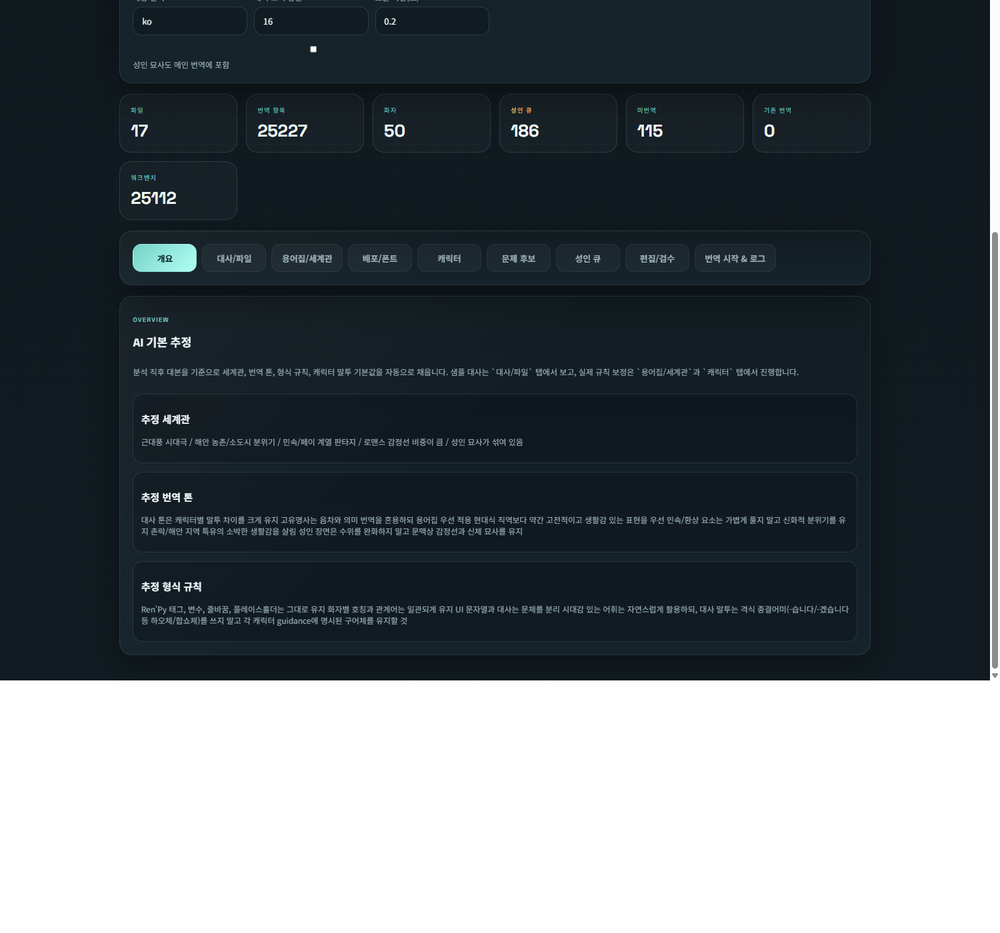
6. 대사/파일 탭
4
어떤 파일을 번역할지 먼저 고릅니다
이 탭에서는 전체 파일을 모두 번역할지, 특정 .rpy 파일만 선택할지를 정합니다.
긴 프로젝트일수록 여기서 범위를 줄여 시험 번역을 먼저 해보는 것이 좋습니다.
- 파일별 줄 수와 상태를 확인할 수 있습니다.
- 대사 미리보기를 통해 본문이 어떤 형식으로 추출됐는지 볼 수 있습니다.
- 기존 연결 번역, 워크벤치 출력, 미번역 항목을 구분해 볼 수 있습니다.
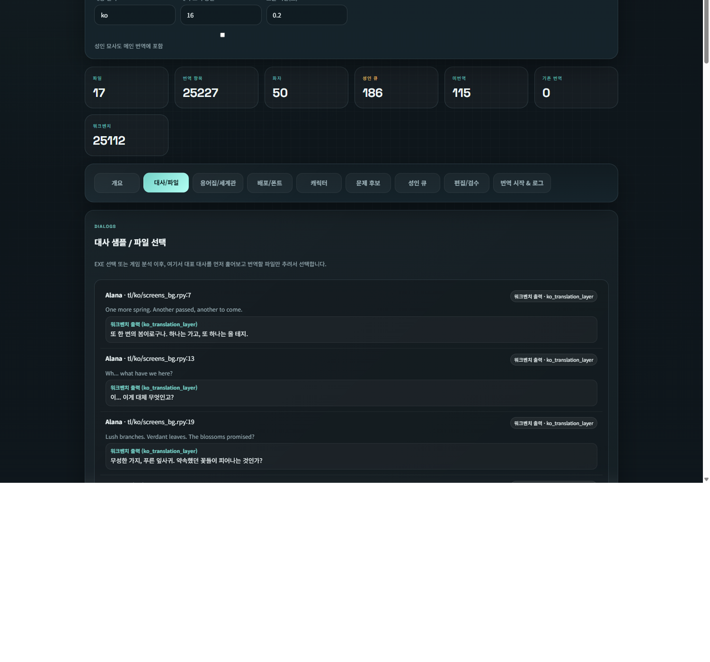
7. 용어집/세계관 탭
5
프로젝트 전체의 번역 원칙을 적는 곳
이 탭은 AI가 매번 프롬프트에서 참고하는 공통 규칙입니다. 세계관 설명, 시대감, 용어 번역 방향, 음차 유지 대상 등을 여기에 정리합니다.
- 세계관: 시대극인지, 현대극인지, 판타지 비중이 큰지
- 형식 규칙: 태그, 변수, 줄바꿈을 어떻게 보존할지
- 용어집: 인명, 지명, 종족명, 절대 바꾸면 안 되는 단어
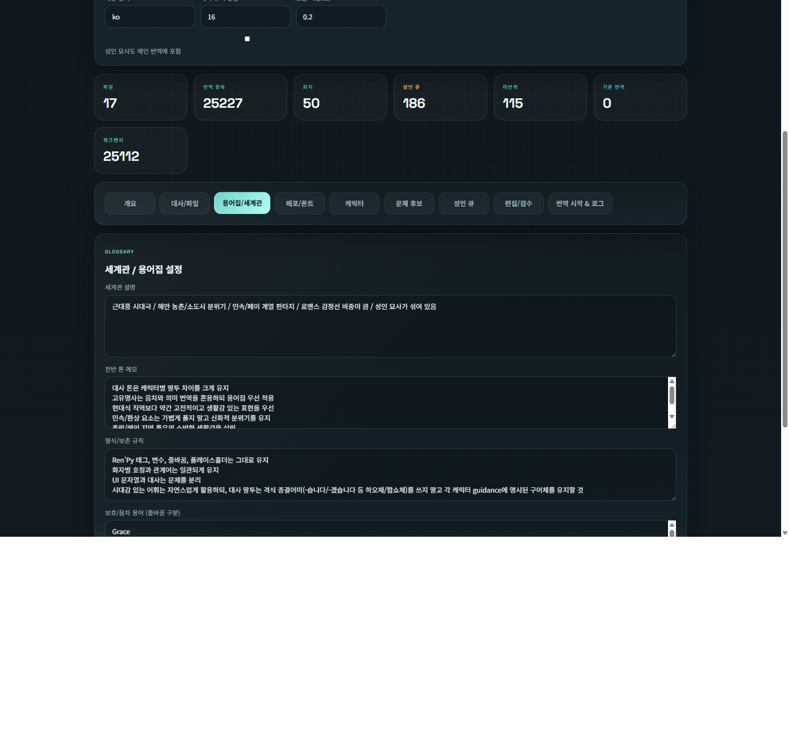
8. 캐릭터 탭
6
캐릭터별 말투를 전체 번역 전에 먼저 맞춥니다
가장 실무적인 흐름은 전체 번역 전에 캐릭터 샘플 3~5줄을 먼저 보는 것입니다. 여기서는 캐릭터 카드, 추정 역할, 샘플 원문, 어투 프리셋, 미리 번역 비교를 한 곳에서 봅니다.
- 캐릭터 목록에서 인물을 선택합니다.
- 현재 설정 / 대안 프리셋 2개를 비교합니다.
- 샘플 미리 번역으로 말투가 맞는지 확인한 뒤 본번역으로 넘어갑니다.
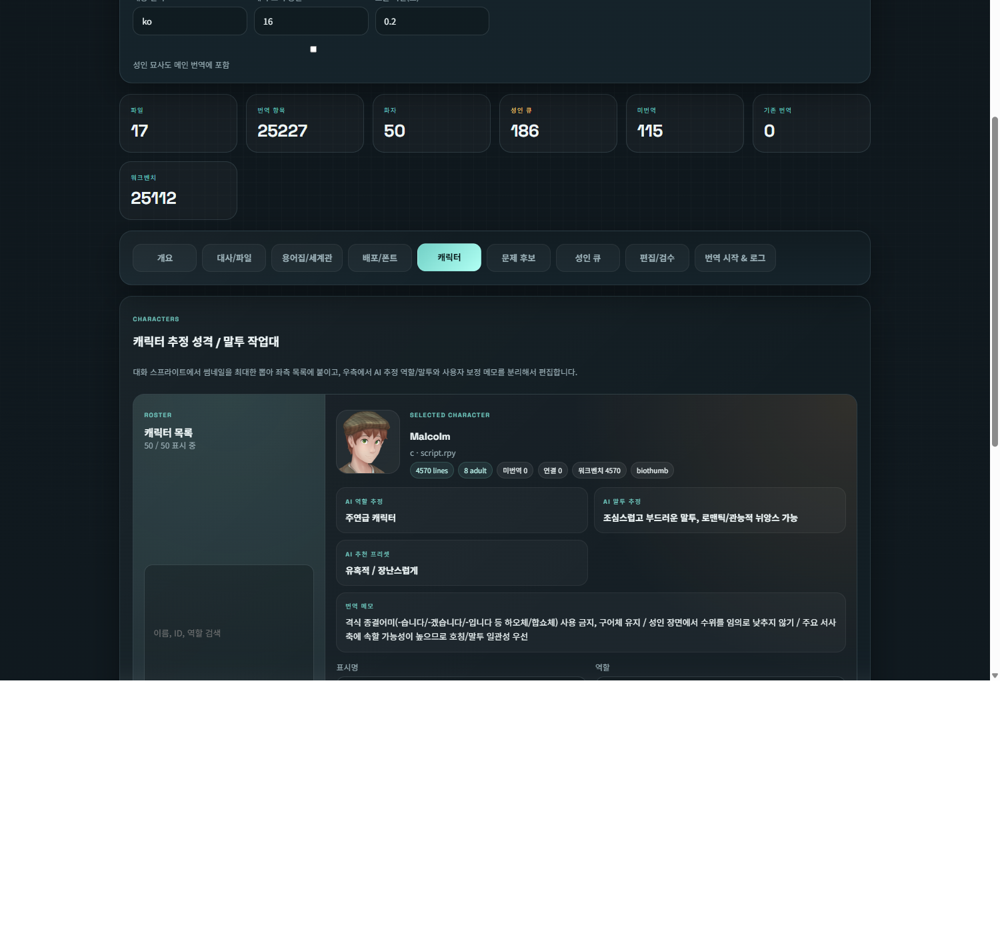
9. 배포/폰트 탭
7
번역이 게임 안에서 어떤 글꼴과 크기로 보일지 정합니다
번역문이 길어지면 글꼴 크기와 폭 차이 때문에 UI가 깨질 수 있습니다. 이 탭은 대사 / 이름 / 옵션 / UI / 시스템 / Glyph 슬롯별로 글꼴과 배율을 정리하는 곳입니다.
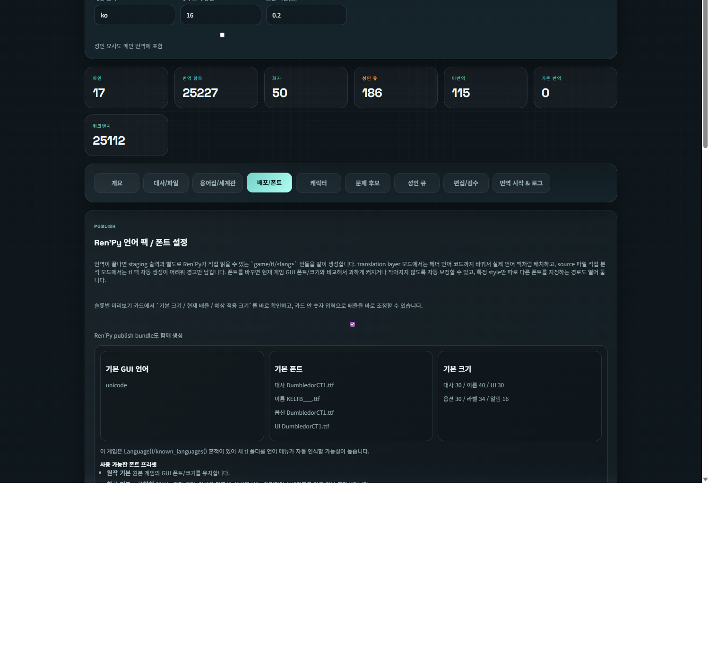
8
Windows 글꼴 브라우저로 실제 설치 글꼴을 선택
Windows에 설치된 글꼴을 카드형으로 보여 주며, 검색과 페이지 이동, 첫 검색 결과 적용을 지원합니다. 외부 시스템 글꼴을 고르면 번역 완료 시 publish bundle 안으로 복사됩니다.
- 적용 슬롯: 현재 어떤 역할의 글꼴을 바꾸는지 표시
- 예상 크기(px): 현재 배율 기준 실제 표시 크기 예측
- 미리보기 문구: 한글과 영문이 함께 보이게 비교
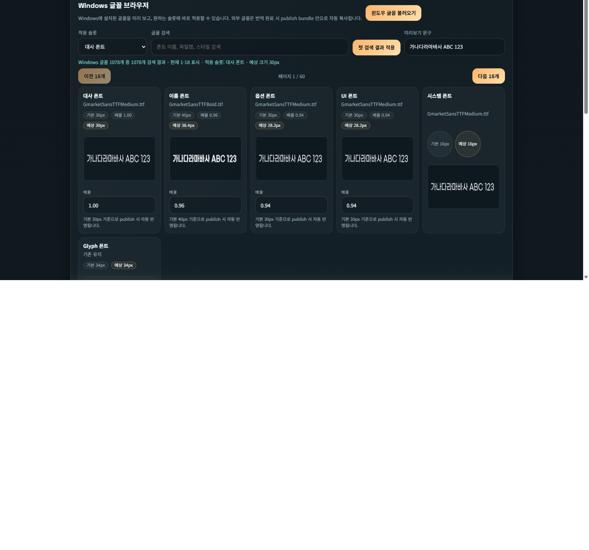
더 자세한 설명은 Windows 글꼴 브라우저 / 폰트 적용 가이드에 정리되어 있습니다.
10. 성인 큐
9
민감한 줄만 별도로 검수하거나 한꺼번에 자동번역
성인 묘사나 민감한 표현이 포함된 줄은 메인 배치와 분리해서 관리할 수 있습니다. 이 탭에서는 문제 줄을 직접 번역하거나, 선택한 항목만 따로 자동번역에 태울 수 있습니다.
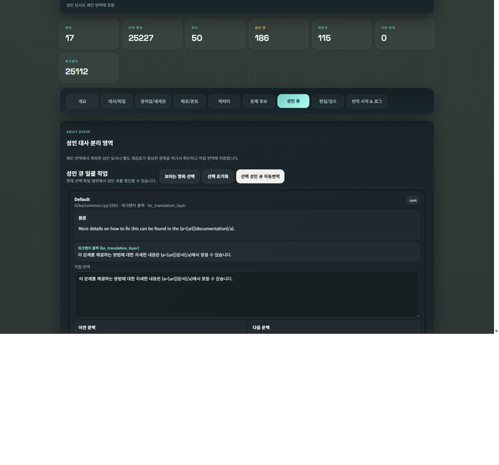
11. 편집/검수 탭
10
원문과 번역문을 나란히 보고 직접 수정
이 탭은 파일 단위로 원문과 연결 번역, 워크벤치 번역을 비교하는 곳입니다. 특정 줄만 직접 고쳐 저장하면 현재 staging 출력과 publish bundle에 바로 반영됩니다.
- 편집할 파일: 특정
.rpy파일을 열어 집중 검수 - 상태 필터: 미번역만, 기존 연결만, 워크벤치 번역만 보기
- 현재 줄 저장 / 변경 저장: 한 줄만 저장하거나 파일 전체 저장
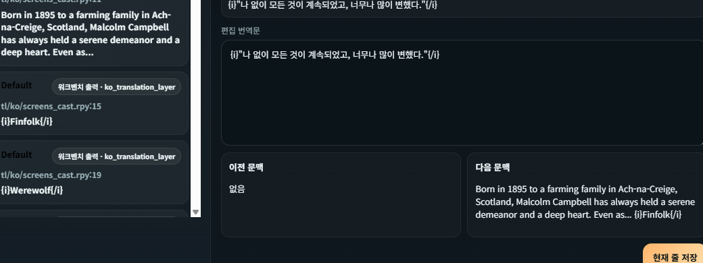
12. 번역 시작 & 로그
11
번역 규칙을 정하고 실제 작업을 시작하는 곳
마지막 탭은 실제 번역 요청을 보내는 곳입니다. 여기서 미번역만 번역, 기존 번역만 재번역, 범위 전체 새로 번역 중 하나를 고릅니다.
- 진행도 연결: 현재 실행 중 세션의 진행률을 실시간으로 표시
- 로그 패널: 분석 완료, 번역 시작, 배치 진행, 오류 메시지 누적
- 결과 카드: 세션 완료 후 현재 범위 결과를 요약
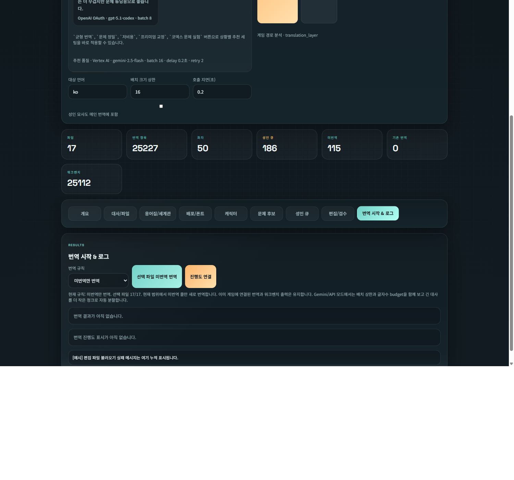
13. 실제 번역 시작 전 체크리스트
-
- 올바른 공급자와 인증 방식이 선택됐는가
- 실행 파일 경로가 정확한가
- 용어집과 보호 용어가 채워졌는가
- 핵심 캐릭터 샘플 미리 번역을 확인했는가
- 파일 선택 범위가 원하는 범위와 일치하는가
- 메인 스토리 파일 1~2개만 선택
- 캐릭터 샘플 말투 확인
- 짧은 시험 번역
- 폰트와 검수 확인
- 그 다음 전체 범위 확장